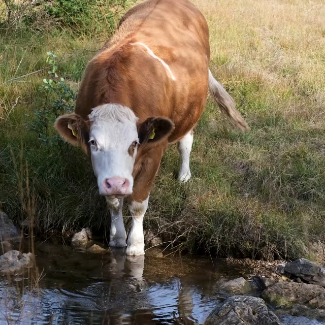
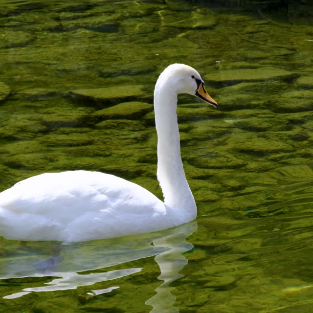
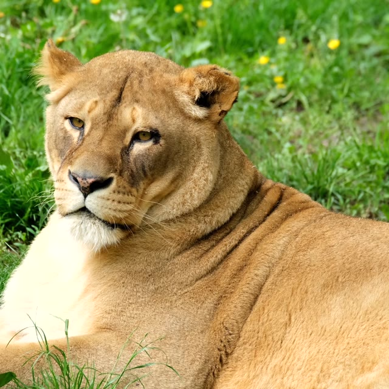
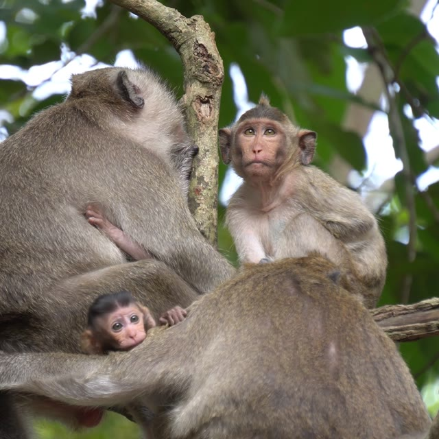
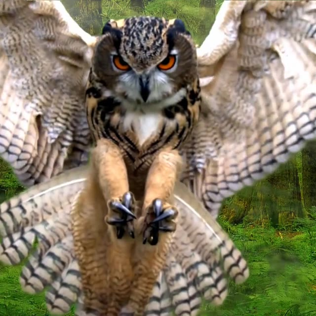
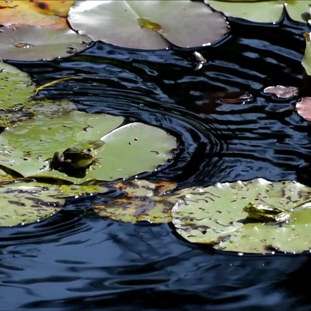

Şarkıyı dinle, her satırın çizimine bak. Uygunsa issue'daki KLİP ONAY kutusunu işaretle; video o zaman üretilir.






| 4.6–6.3 sn | Intro | Listen, listen! Who can it be? |
| 7.1–8.0 sn | Intro | Let's go and see! |
| 9.5–11.4 sn | Verse | Who's that in the big green field? |
| 11.4–13.9 sn | Verse | It's a cow! What does it say? Moo, moo! |
| 13.9–16.0 sn | Verse | Who's that swimming in the pond? |
| 16.0–18.2 sn | Verse | It's a duck! What does it say? Quack, quack! |
| 19.1–21.3 sn | Chorus | Listen, listen, can you hear? |
| 21.5–23.7 sn | Chorus | Animal sounds are everywhere! |
| 23.7–25.4 sn | Chorus | Copy me and say it too: |
| 26.0–28.3 sn | Chorus | Quack and roar and moo, moo, moo! |
| 28.3–29.9 sn | Verse | Who's that sleeping in the sun? |
| 30.4–32.8 sn | Verse | It's a lion! What does it say? Roar, roar! |
| 32.8–34.8 sn | Verse | Who's that swinging in the trees? |
| 34.9–37.3 sn | Verse | It's a monkey! What does it say? Ooh-ooh, aah-aah! |
| 37.3–39.5 sn | Verse | Who's that flying in the sky? |
| 39.6–42.3 sn | Verse | It's an owl! What does it say? Hoo, hoo! |
| 42.3–44.5 sn | Verse | Who's that hopping on a lily pad? |
| 44.5–47.1 sn | Verse | It's a frog! What does it say? Ribbit, ribbit! |
| 47.1–49.4 sn | Chorus | Listen, listen, can you hear? |
| 49.5–51.8 sn | Chorus | Animal sounds are everywhere! |
| 51.8–54.0 sn | Chorus | Copy me and say it too: |
| 54.0–56.1 sn | Chorus | Quack and roar and moo, moo, moo! |
| 56.3–58.2 sn | Outro | Now you know them, one, two, three… |
| 58.2–60.4 sn | Outro | Can you make them all with me? |